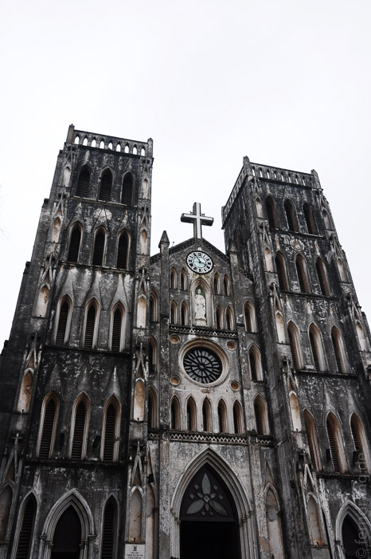

18/02/2011
Hanoi
Wenn man vom Flughafen aus durch die trostlosen Außenbezirke in die Altstadt fährt, weiß Hanoi seine Reize zunächst gut zu verbergen. Neben der Autobahn arbeiten die Reisbauern im Schatten der gigantischen Reklametafeln knietief in ihren kleinen, schlammigen Parzellen. Die Stadt macht sich durch die immer dichter werdende Bebauung bemerkbar. Ganz schmale, aber sehr tiefe Häuser mit so vielen Etagen wie möglich scheinen sehr beliebt zu sein. Auch wenn sie ganz alleine in den Feldern stehen, werden großen Seitenwände ohne Fenster gebaut und nicht gestrichen - jederzeit bereit mit den nächsten Haus eine Straße zu gründen.
In der Altstadt werden die Straßen immer wuseliger und enger, bis nur noch Motorräder zwischen den am Straßenrand aufgebauten Garküchen und Verkaufsständen hindurch passen. Eine autofreie Zone ist in Hanoi aber nicht mit einer verkehrsberuhigten Zone zu verwechseln. Da hier auf zwei Einwohner ein Roller kommt, sind mit den paar Autos eigentlich nur Hindernisse für Rollerfahrer aus dem Weg geräumt. Blinker, Ampeln, Verkehrsschilder und das restliche Zubehör wird hier durch die Hupe ersetzt. Da hier niemand Freude an festen Regeln hat, kann man auch die größten und vollsten Straßen nach Wickert-Art überqueren, indem man sich einfach blind in den Rollerstrom stürzt und darauf vertraut, dass die Fahrer einem ausweichen - zögern ist gefährlicher.
Auf den ersten Blick ist Hanoi eine typische asiatische Großstadt. Die Bürgersteige werden komplett von kleinen Ständen eingenommen, an denen man die leckersten vietnamesischen Gerichte verkosten kann. Überall sitzen die Leute auf winzigen Plastikhockern, auf denen man den Kopf zwischen den Knien hat. Zu jeder Tages- und Nachtzeit wird hier geschmatzt und geschlürft. Wer nicht kocht, verkauft grünen Tee.
In der schönen Altstadt und dem Viertel westlich vom Hoan-Kiem-See sind die Straßen nach Gewerbe aufgeteilt. Korb-Straße, Trommel-Straße, Opfergeld-Straße, Plastik-Straße, Küchenkram-Straße, Asia-Nippes-Straße. Die Straße, in der unser etwas verwirrtes Hotel Especen liegt, ist zu klein für Autos und steht voll mit Mikro-Hockern, von denen eine hartnäckige Fischsaucenwolke ausgeht. Um die Ecke ist die gruselige St-Joseph-Kathedrale, ein neugotischer Prototyp, der wirkt als wäre er aus einem einzigen Stein gemeißelt und hätte danach 100 Jahre im Regen gestanden (letzteres stimmt vermutlich auch).
Die dort anschließende Straße ist die Café-Straße und trägt viel zum Charme Hanois bei. Denn neben der ganzen asiatischen Hektik bietet die Stadt überall nette, kleine Cafés, in den man verschnaufen kann. Neben Baguettes ein weiteres Vermächtnis der Franzosen. Die Vietnamesen mögen ihren Kaffee sehr stark und süß. Sie tarnen diese Kombination als "Milch" - Kondensmilchsirup würde der Wahrheit näher kommen. Jeder Schluck erzeugt fünf Minuten Gänsehaut.
Weiter westlich liegen die offizielleren Viertel, wo auch das Mausoleum von Ho Chi Minh untergebracht ist. Man muss durch flughafenähnliche Sicherheitskontrollen und zu guter Letzt auch noch seine Fotoapparate abgeben, bevor man zügigen Schrittes durch das kleine Gruselkabinett gescheucht wird. In dem gedrungenen Marmorklotz stehen überall schicke Soldaten herum, die mit bösen Blicken für die nötige Andacht sorgen. Im Innersten liegt Onkel Ho mit wächsern präparierter Haut in einem orangefarben beleuchteten Glaskasten. Sein mildes, totes Lächeln verbirgt seinen Ärger über diesen Mummenschanz, da es eigentlich sein letzter Wille war, verbrannt zu werden. Die Anlage beinhaltet noch ein Propaganda-Museum und einen hässlichen botanischen Garten.
Als Tourist darf man sich natürlich auch das Wasserpuppentheater nicht entgehen lassen. Das ehemalige Reisfeld-Entertainment ist eine Art vietnamesisches Hänneschen im Wasser. Die Vorstellung wird mit allerlei Feuereinlagen aufgepeppt, ist aber Dank der hübsch gemachten Holzpuppen schön anzusehen. Davon abgesehen haben wir uns fast nur durch die Straßen treiben lassen und überall probiert, was in den Töpfen kocht. Da es für hiesige Verhältnisse winterlich kalt ist (und deswegen alle in Daunenjacken herum laufen) lohnt es sich, regelmäßig Pho Bo, die typische Reisnudelsuppe mit Rindfleisch nachzufüllen.